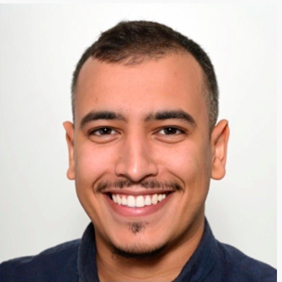

Mohamed El Baha
mohamedelbaha@proton.me


Welcome to my personal page! I'm Mohamed El Baha.
I design and deliver applied AI systems that work in the real world. With expertise spanning the full lifecycle — from defining needs to modeling, deployment, and adoption — I build solutions that are both technically robust and operationally viable.
I hold a Master of Engineering from IMT Atlantique in France and a Bachelor’s in Pure Mathematics from the University of Western Brittany. My work blends deep mathematical grounding with pragmatic engineering.
I’m also the founder of MAIR (Moroccans in AI Research), a global network driving collaboration, mentorship, and visibility for Moroccan AI talent worldwide.
I'm based in Paris, but I grew up in Morocco.